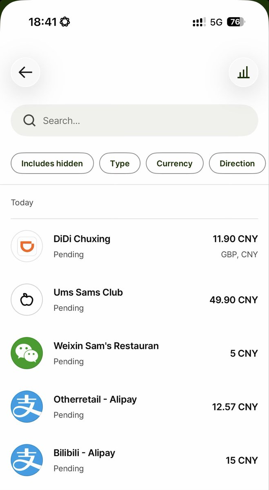
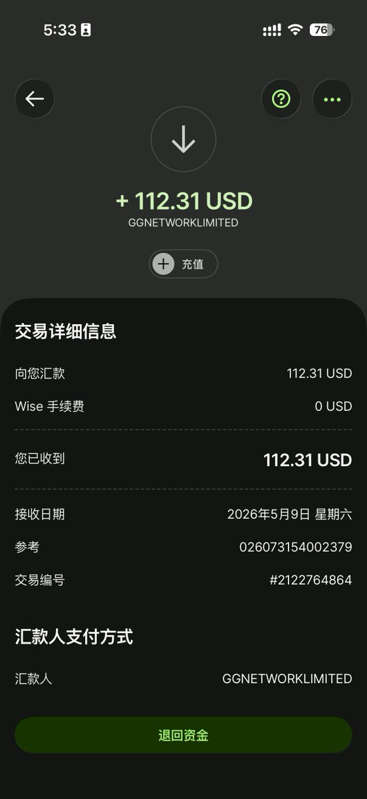
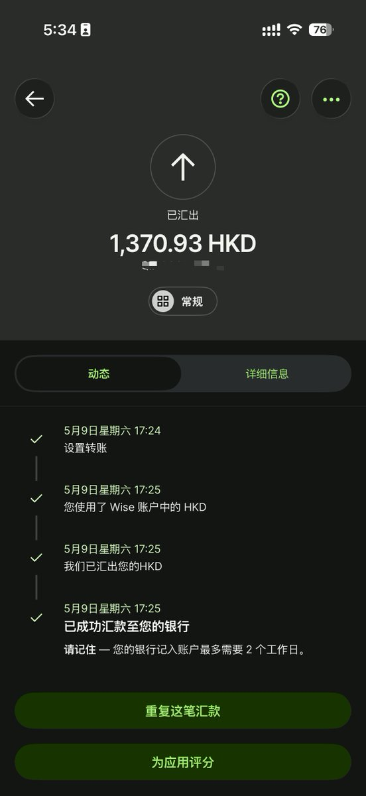
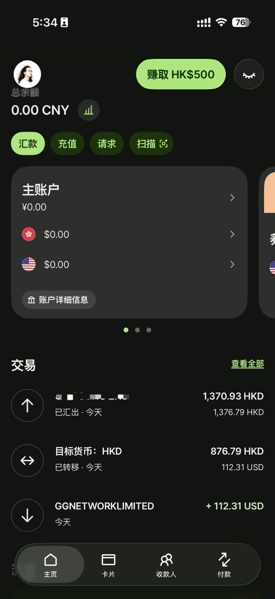

Aoi M
@aoim33
没有借记卡的 Wise 不是完整的 Wise




𝐋𝐚𝐮𝐫𝐞𝐧𝐜𝐞
@LaurenceMister
WISE 太丝滑了，太丝滑了！今天第一次享受到境外银行类 App 的丝滑，比国内的任何银行 App 都丝滑的体验，真的太棒。
没开户的抓紧开户入金，真的隆重推荐！https://t.co/pNRfdyEzoU
————
对于不了解 wise 的我再介绍一下：
WISE 不仅仅是一个汇款的工具，它是全球资金配置的“路由器”，通过 wise https://t.co/PftdFHVhRy